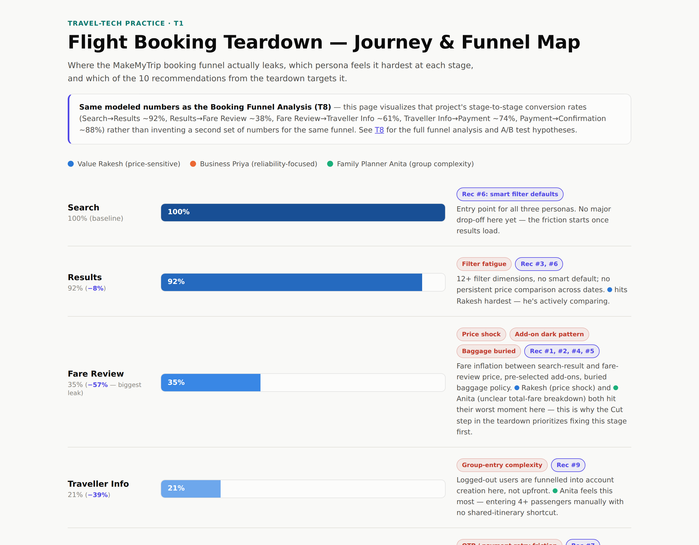

C — Comprehend the Situation
The clarifying questions I'd ask before touching the product, the way a Google PM interview expects: which platform (web vs. app — both), domestic or international (domestic only), and an existing product or a new one (existing, mature product). Scope: MakeMyTrip's flight search → booking flow specifically, not hotels or holidays — narrower on purpose, so the analysis goes deep on one flow instead of shallow across three.
Business model: the flight vertical monetizes through airline commissions/overrides, a convenience fee layered on the base fare, and ancillary revenue (seat selection, insurance, baggage). That matters here specifically — add-on pre-selection and the late-stage fee reveal found below aren't accidental UX oversights, they're revenue mechanisms. Any recommendation that removes them has a real, quantifiable cost, not just an upside; see Risks & Trade-offs below.
North Star Metric (company level): completed bookings per unique searcher — normalizes for the high browsing-only traffic that never intends to book. This teardown is scoped to moving that metric one funnel stage at a time, starting with the stage that leaks hardest.
I — Identify the Customer
Three personas span the segmentation axes that actually predict booking behavior — price sensitivity, time pressure, and party complexity — not demographic axes like age or city, which don't:
- "Value Rakesh" (28, IT professional, 4–5 domestic trips/yr) — price-sensitive, compares 3+ apps before booking.
- "Business Priya" (34, consulting manager) — books last-minute, values reliability and rebooking flexibility over price.
- "Family Planner Anita" (41) — books for 4+ pax, needs group-seat clarity and abandons on unclear total-fare breakdowns.
R — Report the Customer's Needs
Journey: Home search widget → results list (filters/sort) → fare review (baggage/meal add-ons) → traveller details → payment → confirmation + "My Trips." Logged-out users are funnelled into account creation at payment, not upfront — reduces search friction but adds a late-stage form-fill tax.
Retention loop: "My Trips" functions as a lifecycle retention engine, not just a post-booking utility tab — it's the reason a user reopens the app at all after booking (rebooking, cancellation, web check-in). That's why Business Priya's reliance on it post-confirmation (see the funnel map below) is a commercial signal, not just a UX nicety — it's the retention mechanism the acquisition funnel below feeds into.
Needs uncovered, mapped to the journey above:
- Trust/transparency need — fare inflation between search-result price and fare-review price (taxes/fees revealed late) erodes trust; add-on pre-selection (insurance, seat) defaults to "on," reading as a dark pattern at checkout.
- Time-efficiency need — filter fatigue (12+ dimensions, no smart default) and no persistent price comparison across dates force users to manually reopen search in a new tab.
- Clarity/control need — baggage policy buried a tap deep, a top cause of post-booking support contact.
Funnel: Search → Results → Fare Review → Traveller Info → Payment → Confirmation. The biggest modeled drop-off sits between Results and Fare Review (price-shock from add-on fees — modeled at ~38% conversion in the Booking Funnel Analysis (T8)), with a second leak between Traveller Info and Payment (form fatigue + OTP retry friction).

Click to open the full interactive Journey & Funnel Map (also available in dark mode).
Competitors: ixigo surfaces the convenience fee earlier than MakeMyTrip and leads with "flight confirm guarantee" trust messaging; Booking.com's flights product (smaller India share) shows all-in price at search. MakeMyTrip's "My Trips" is the strongest post-booking lifecycle surface of the three.
C — Cut Through Prioritization
Of the three personas, I'd prioritize Value Rakesh's need first. Price-sensitive comparison shoppers are both the largest segment of OTA search traffic and the segment most exposed to the single biggest funnel leak above — the fare-review price shock hits a price-anchored searcher hardest. Business Priya's reliability need and Family Planner Anita's group-booking complexity are real, but lower-frequency — worth a later cycle, not this one. Everything below is scoped to fixing Rakesh's need first.
L — List Solutions
- All-in fare display at the results level — kill the late-stage price reveal.
- Opt-in (not opt-out) add-ons at fare review.
- Persistent "compare dates" strip on results instead of reopening search.
- Baggage/meal policy inline on the fare card, not a tap away.
- One-tap "hold my seat 15 min" for indecisive high-intent users.
- Smart filter defaults ranked by price + duration + layover, not price alone.
- Payment retry with saved card + biometric re-auth to cut payment-stage drop-off.
- Proactive delay-risk badge on results (feeds the Flight Delay Dashboard (T3)).
- Group-booking mode for 4+ pax with a shared itinerary link.
- Post-booking "manage trip" nudges (web check-in, gate-change alerts) via push.
E — Evaluate Trade-offs
RICE-scored, ranked by priority:
| Feature (RICE-scored) | Reach × Impact × Confidence | Effort | RICE / priority |
|---|---|---|---|
| Opt-in add-ons at fare review | 8 × 2 × 0.9 | 1 | 14.4 — P1 / Must |
| All-in fare display at results | 10 × 3 × 0.9 | 2 | 13.5 — P1 / Must |
| Baggage/meal policy inline | 9 × 1.5 × 0.8 | 1 | 10.8 — P1 / Must |
| Delay-risk badge on results | 10 × 2 × 0.6 | 3 | 4.0 — P2 / Should |
| Payment retry + biometric re-auth | 5 × 3 × 0.7 | 3 | 3.5 — P2 / Should |
| Persistent compare-dates strip | 6 × 2 × 0.7 | 3 | 2.8 — P3 / Could |
MoSCoW: Won't-have this cycle — the full loyalty-program overhaul (separate project, see Travel Loyalty Program Redesign below); it's a retention lever, not a booking-funnel fix.
Risks & Trade-offs
Every recommendation above has a cost, not just an upside — naming it here, not after launch:
- All-in fare display — the honest total can look higher than a competitor's headline price at the results stage, hurting click-through from price-comparison meta-search and paid search ads. The fix that builds trust downstream may cost impressions upstream.
- Opt-in add-ons — directly reduces ancillary revenue per booking (insurance/seat attach rate). This is the business-model trade-off named in Comprehend, made concrete — it needs a revenue-per-booking floor agreed with Finance before shipping, not just a UX sign-off.
- Baggage/meal policy inline — minor engineering cost, no material revenue risk. The lowest-risk item on the list, consistent with its RICE ranking.
- Delay-risk badge — risks eroding trust in a different direction if the underlying prediction (see the Flight Delay Dashboard, T3) isn't well-calibrated. A wrong badge is worse than no badge.
Mitigation: ship all-in pricing and opt-in add-ons behind the A/B test already scoped in the Booking Funnel Analysis (T8), with revenue-per-booking as a guardrail metric alongside conversion — not conversion alone. A win on Fare Review conversion that quietly craters ancillary revenue isn't actually a win.
S — Summarize Recommendation
Ship all-in fare display and opt-in add-ons first — RICE 13.5 and 14.4, the two highest-scored and lowest-effort items on the list. Together they remove the exact price-shock that costs the funnel its single biggest leak, for the segment (Rakesh) chosen in the Cut step above. Everything else on this list sequences behind those two.
Success Metrics — the HEART Framework
Using Google's own HEART framework (Rodden et al.) instead of a single catch-all "engagement" number:
- Happiness — CSAT specifically on "pricing clarity" (post-booking survey); NPS delta before/after the all-in pricing rollout.
- Engagement — searches per session; % of sessions using the new compare-dates strip.
- Adoption — % of eligible searchers who see and interact with the all-in fare display / opt-in add-on toggle in month one.
- Retention — repeat booking rate within 90 days, segmented by whether a user's first booking hit the old opt-out add-on flow or the new opt-in one.
- Task success — Results→Fare Review conversion (the primary funnel-leak metric, North Star for this cycle), search-to-confirmation completion rate, time-to-book.
Tied to an OKR
Objective: Remove price-shock and trust friction from fare review for price-sensitive searchers.
- KR1: Increase Results→Fare Review conversion from the ~38% modeled baseline (see Booking Funnel Analysis, T8) to 50%+ within one quarter.
- KR2: Reduce "hidden fees" CSAT verbatims by 50%.
- KR3: Ship both P1/Must recommendations this quarter, validated against the A/B hypotheses already scoped in T8.